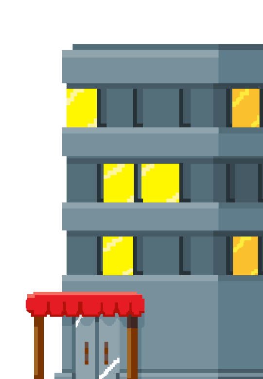
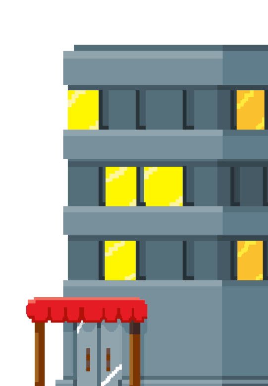

Objetivo do projeto
Este projeto tem por objetivo principal desenvolver habilidades socioemocionais e auxiliar crianças que tem Transtorno de Déficit de Atenção e Hiperatividade (TDAH), A proposta será oferecer auxílios através de rotinas, cronogramas, lembretes, estímulos, jogos e atividades educacionais.
 

continuar